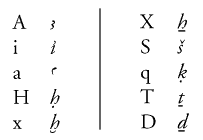

|
how
to submit > formatting guidelines
Guidelines
for Formatting Materials for Online Publication in BMSAES
Method
of Submission
The material
as considered below should be sent to The British Museum as a series
of computer files. For speed it is preferred that files are sent
by email, but if the size of an individual file is likely to exceed
2 megabytes, regular post or courier is preferred. If using post
or courier, the preferred format would be on a ZIP disc or a CD
ROM; floppy discs are in general too small if images and diagrams
are being submitted as well. Please ensure that all files are checked
and do not contain viruses.
If anything
needs to be arranged in a specific fashion, such as a complex table,
or a chart, then please also send a paper copy.
We are normally
unable to accept manuscripts only available in paper format.
Contact
Information
Please supply
an email address for queries about the manuscript. Please also supply
an email address which can be given with the paper for readers to
send communications to the author(s).
Written
Content: File Format and Structure
The document
can be written using any mainstream word-processing program. When
submitting material, please indicate the program used (e.g. Word
2000, Wordperfect 8, plain text editor), and the format of the file
(e.g. program's default format, plain text, RTF). Do not forget
to mention the operating system you used (Mac OS, Windows 98 etc).
If you are unsure of the format, please do not be afraid to say
so!
Although the
document will be published on-line, please do NOT submit
it in either PDF or HTML format.
Keep formatting
to an absolute minimum.
Diacritics:
Please use the so-called Manuel de Codage system. This system
is explained in J. Buurman, N. Grimal, M. Hainsworth, D. van de
Plas, Manuel de codage des textes hieroglyphiques en vue de leur
saisie sur ordinateur (Informatique et Egyptologie 2, Paris
1985, and subsequent updates). The codes for the principal transliteration
characters are given here at right:
Hieroglyphs:
Use only if absolutely necessary, and include a paper
copy with the Gardiner sign list numbers and the arrangement of
the signs, or else autograph the text and it will be used as an
image.
Format
of References: Most references should go in the text
in an abbreviated format (e.g. Spencer JEA 85, 55-83) which
will appear in full in the bibliography at the end of the article.
Authors are requested to compile such a bibliography.
The following
is an example of referencing: Text "and such an object was found
in Samanud (Spencer JEA 85, 55-83)". In the bibliography
this would appear as:
Spencer, N.A.,
The epigraphic survey of Samanud, JEA 85 (1999), 55-83.
Books should
have full title, series name, place of publication, publisher and
date.
References to
electronic publications should follow the same broad format, giving
the conventional reference and the URL. For some guidance, see,
for example, pages on the site of Internet
Archaeology or the Modern
Language Association.
References should
be put in footnotes; lengthy discursive footnotes should be avoided
and the data either incorporated in the body of the article or given
as an appendix.
Images
We hope that
you will wish to submit line, greyscale or colour images to accompany
your article. If these can be computer-generated, then please send
us a copy of the original file, clearly specifying the format (e.g.
JPEG, TIFF, Photoshop) and the program used (e.g. Photoshop, Illustrator
etc), and we will convert them. A printout of a correct image would
be helpful if doing this. Please send reasonably high-resolution
images, as they can then be adapted for both screen viewing and
printing.
To save sending
us original drawings, photographs, or slides/transparencies, it
would help if you could scan them yourselves. However, if you are
not able to do this, we will scan them for you.
Within reason,
there is no limit to the number of illustrations you may have, but
please ensure they are all highly relevant to the article.
Copyright
Authors should
ensure that they have all the necessary permissions to publish material
submitted to BMSAES. In particular, they should check that their
permission to reproduce includes publication by electronic media
and on the World Wide Web. We are unable to obtain copyright on
your behalf.
Abstract
and Keywords
Authors should
provide an abstract of up to 150 words of the article. This will
be what readers will first see of the article; it will also be communicated
to the Annual Egyptological Bibliography. It is recommended
that a number of keywords are suggested for use in future indexes.
We reserve the right to modify abstracts and keywords if needed.
All queries
should be addressed to Nigel Strudwick, email nstrudwick@thebritishmuseum.ac.uk.
|